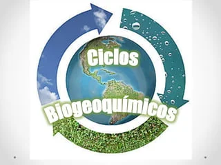
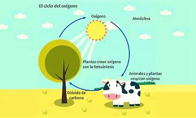
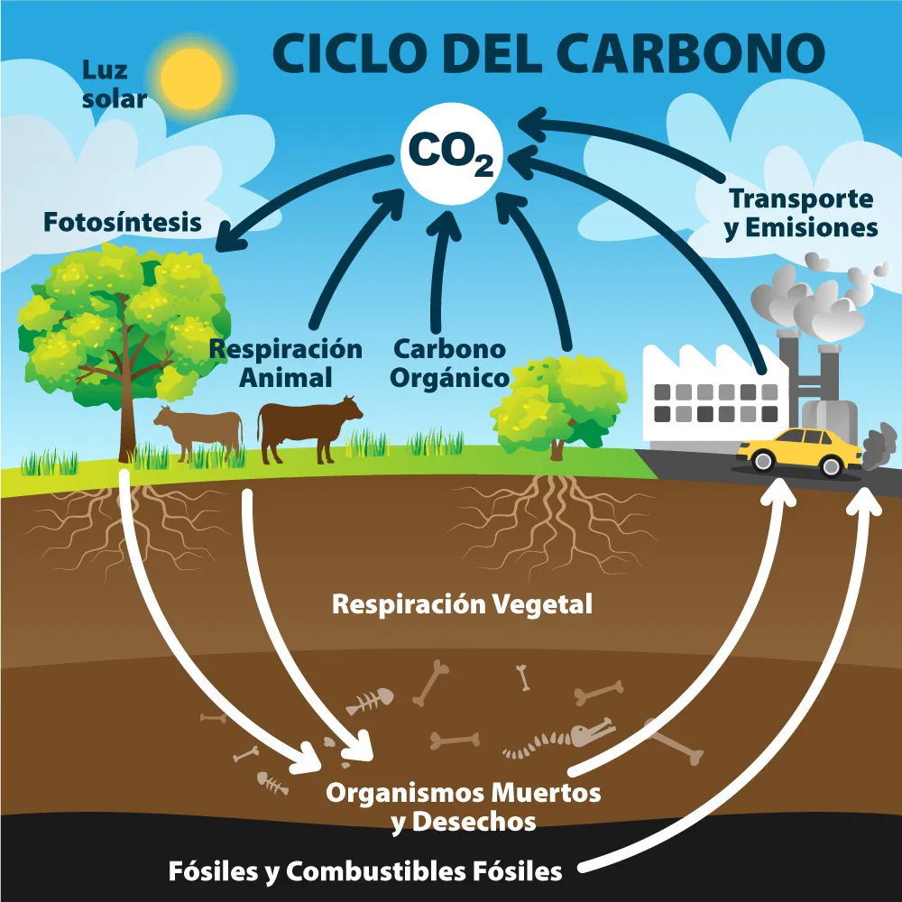
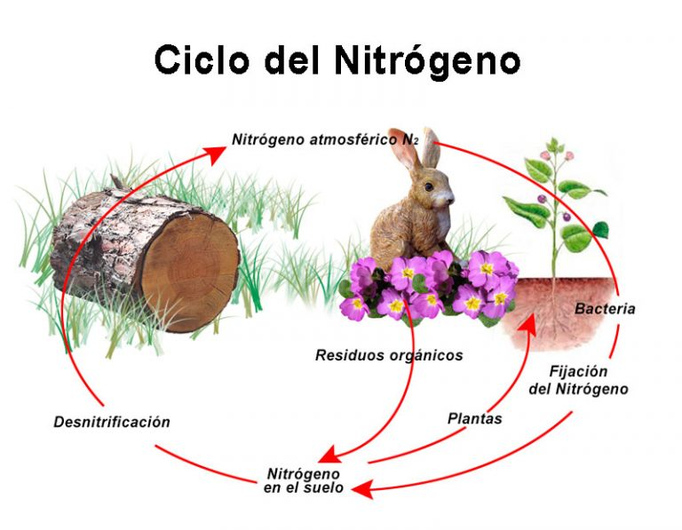
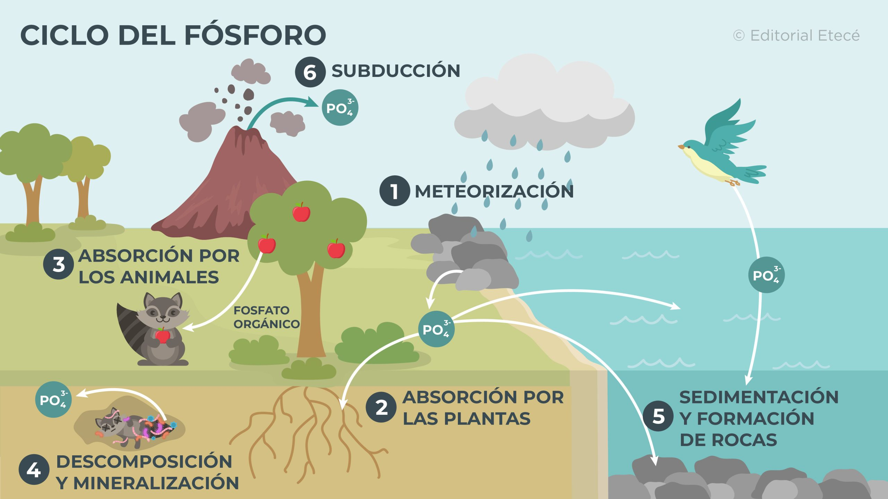
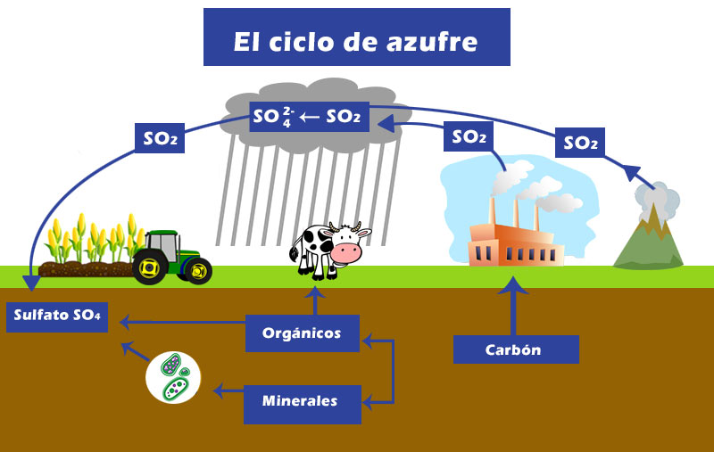
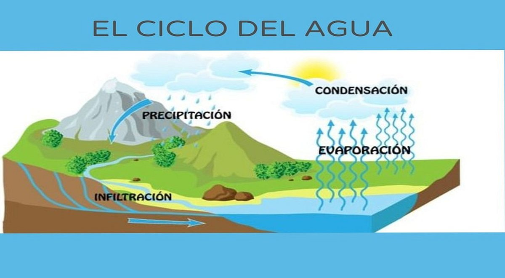
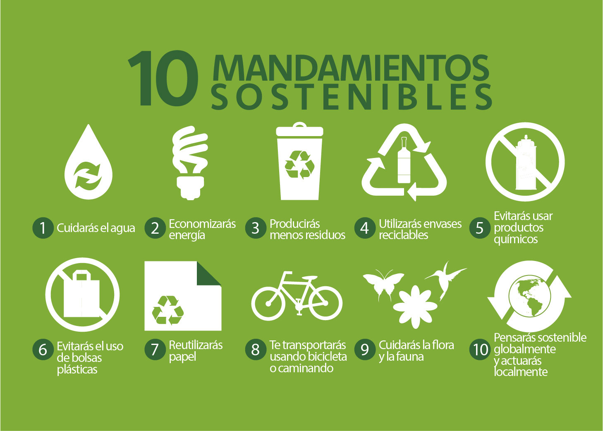

El tercer principio básico de la naturaleza establece que la Tierra es un sistema abierto con respecto al flujo de energía.
CICLOS BIOGEOQUIMICOS
 Cuarto principio:El cuarto principio establece que la Tierra es un sistema cerrado con respecto al flujo de materia.
FLUJO DE MATERIA
El ciclaje de sustancias químicas comienza con la incorporación de compuestos inorgánicos a los organismos productores, que elaboran compuestos orgánicos mediante fotosíntesis. Estos son consumidos por organismos consumidores y, al morir, son descompuestos por organismos desintegradores, reintegrando compuestos inorgánicos al medio ambiente.
CICLOS GASEOSOS
Las sustancias circulan entre la atmósfera y los organismos vivos. Los principales ciclos gaseosos son los del oxígeno, del carbono y del nitrógeno.
CICLO DEL OXIGENO
El oxígeno es el elemento más abundante en los seres vivos. El 20% de oxígeno en la atmósfera es producto de la fotosíntesis. Su ciclo está vinculado al ciclo del carbono, y su conversión en ozono es esencial para la vida.
CICLO DEL CARBONO
El ciclo del carbono involucra las cuatro esferas de la Tierra: litosfera, hidrosfera, atmósfera y biosfera. Es fundamental para la formación de moléculas orgánicas, como carbohidratos y proteínas.
CICLO DEL NITROGENO
El nitrógeno es esencial para la síntesis de proteínas y ácidos nucleicos. Aunque constituye el 78% de la atmósfera, debe ser transformado por bacterias y algas para ser usado por plantas y animales.
CICLOS SEDIMENTARIOS
Los nutrientes circulan lentamente entre la corteza terrestre, la hidrosfera y los seres vivos. Los ciclos del fósforo y del azufre son ejemplos de ciclos sedimentarios.
CICLO DEL FOSFORO
El fósforo es esencial para los ácidos nucleicos y el ATP. Se encuentra en pequeñas cantidades en las plantas y animales, y su reservorio es la corteza terrestre.
CICLO DEL AZUFRE
El azufre es un micronutriente vital para las proteínas. Sus principales reservorios son los océanos y la corteza terrestre.
CICLO HIDROLOGICO
El agua es fundamental para la vida y es el principal disolvente universal. Constituye entre el 50% y el 90% de la masa de los organismos vivos.
REGLA DE SUSTENTABILIDAD
Los ciclos biogeoquímicos renuevan, purifican y conservan los nutrientes, que son finitos y pueden agotarse si la tasa de consumo es mayor que la de reciclaje.
